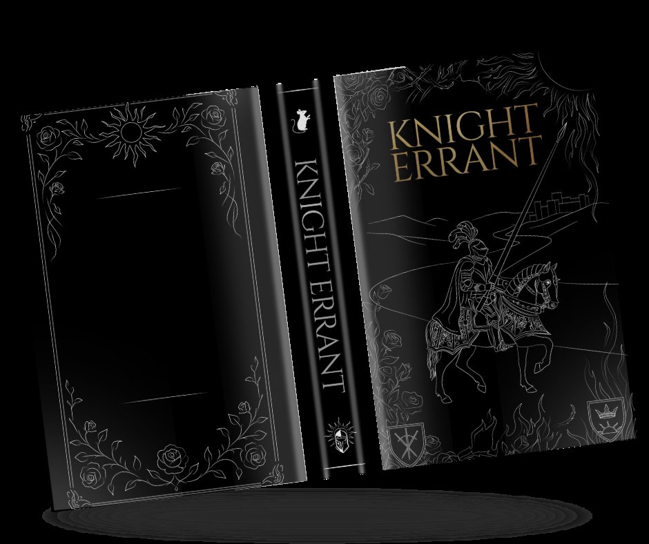
A dark fantasy novel built around two warring factions, the Rose and the Sun, needed a cover that felt historically grounded without looking like a generic fantasy image. The author came in with a specific vision: black background, silver figures, gold lettering, and a strong sense of the conflict baked into the frame itself.
The original idea was a silhouette-style cover with a prince and his knights crossing from left to right on horseback, the Rose motif (vines) framing the left side and Sun motif (rays of light) framing the right, both clashing at the top and bottom of the image. Armour would be late medieval and Renaissance in style, close helmets, sallets, full plate, with each knight's armour reflecting the different realm they were recruited from. The first thing the author asked was whether Emma used AI, and the answer was no, which was the deciding factor in going ahead.
What ended up on the page looks different from that original concept, but everything that made that initial brief good is still in the final cover. The symbolism is there, the armour accuracy is there, the high contrast black-and-silver palette is there. The evolution was in finding the version of those ideas that actually worked as a published cover rather than as a concept.
In Knight Errant, magic comes from the Sun and is widely considered a source of chaos and evil. Tancred, the prince, is deeply tied to the Church of Rose and Shadows, but tolerates magical fire and artifacts in his own bodyguard. His sister, a mage, is killed by his henchmen early in the story. The cover carries all of this tension in its visual language, the Rose and Sun in constant opposition, framing a figure who belongs to both worlds and neither.
The author sent a text passage describing Tancred directly from the manuscript. Three crossed swords of the Duchy of Kolbe on the upper chest, the pale castle of Kreideburg below them, roses and vines down the pauldrons to the gauntlets, a close helm with dark blue feathers, and muted silver-blue armour kept deliberately below the usual high polish so the decorations catch the light rather than the surface. Every heraldic detail on the cover is pulled from that passage.
Everything on the cover is drawn by hand in Affinity Designer as vector paths. The knight, the horse, the rose borders, the flames, the heraldic shields. Nothing is stock or generated. IM Fell English was chosen for the title because it reads like a manuscript typeface without being a costume font. After testing full colour, the cover went back to monochrome, which gave it more presence on a shelf full of brighter fantasy covers.
How it was built, from first sketch to final cover
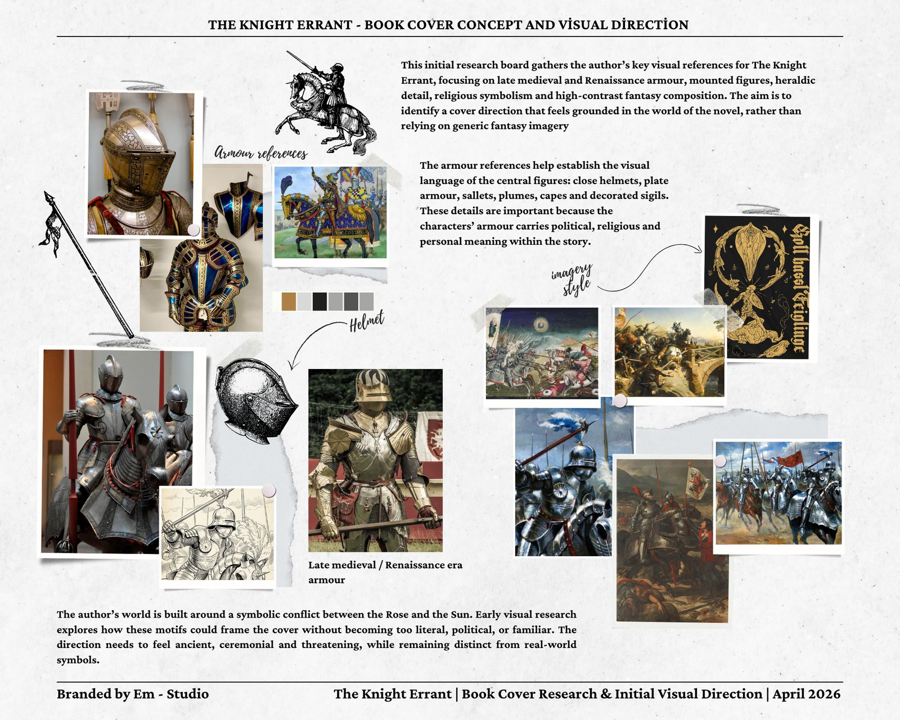
Building a visual language from the manuscript itself
The author sent a passage from the manuscript describing Tancred's armour in detail. Three crossed swords of the Duchy of Kolbe engraved on the upper chest. The pale castle of the Kreideburg family below them. Roses and thorny vines running down the pauldrons to the gauntlets. A close helm topped with a plume of dark blue feathers. The armour itself kept in the silver-blue of Kolbe, muted rather than high-polished, so the decorations catch the light instead of the surface. On his back, a cape in the fashion of witch hunters, richly decorated with runes cast in Madrigundan brass. His personal heraldry on the back of the cape: a field of pure black, the Rose above the fortress of Defiance, besieged by the white flames of the Sun.
That passage became the reference document for everything on this cover. The roses climbing the left border, the flame elements on the right, the heraldic shields at the base, the plume style, the armour silhouette. The moodboard pulled together period references for close helmets, sallets, plate armour and horse barding to make sure the illustration matched the late medieval and Renaissance world the author had built. Getting armour wrong on a fantasy cover with this level of world-building specificity would undermine everything else the cover was trying to do.
Research phase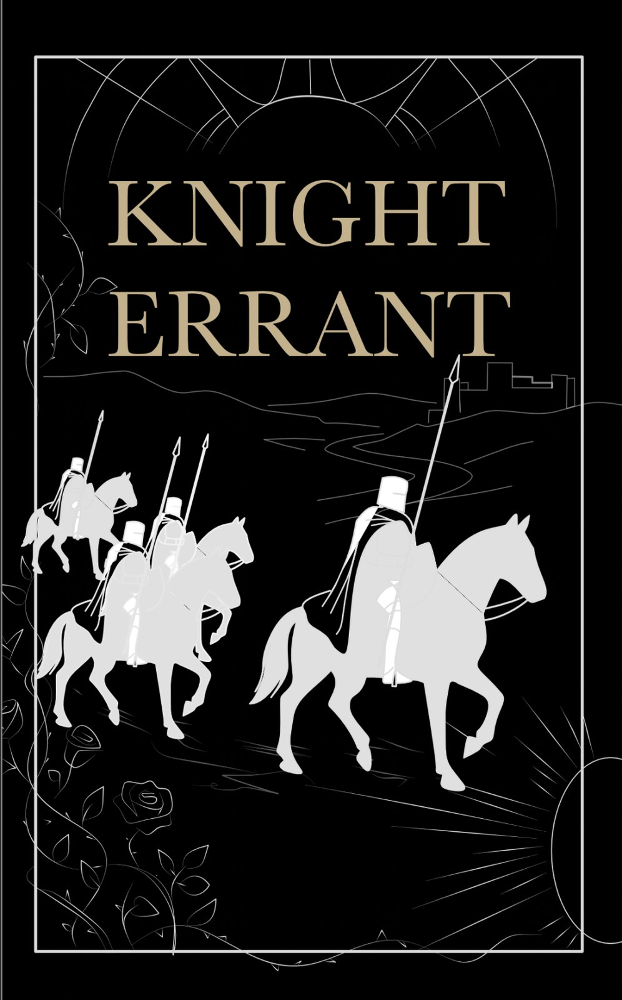
Starting from the original brief: knights in silhouette, Rose on the left, Sun on the right
The original brief was specific about the visual language. Black background, silver figures, golden lettering. A prince and his knights on horseback, crossing from left to right in silhouette. Their banners above them. Vines on the left side of the frame representing the Rose faction, and rays of light on the right representing the Sun, both clashing at the top and bottom of the image. The author wanted strong contrast and a cover that stood apart from the fanart-style imagery common in fantasy, or covers so abstract they gave nothing away about the world.
This first concept explored that silhouette direction with three knights riding together. It had the structural logic right, the Rose vs Sun opposition framing the image, the high contrast black ground, figures reading against it. The problem was that three figures at the same scale gave the composition no focal point. A silhouette works best when the viewer knows immediately where to look, and three equally-sized riders at the same depth made that impossible.
Concept v1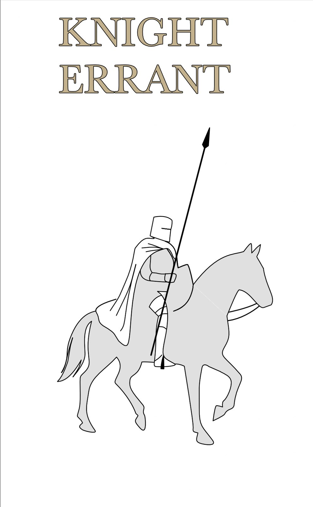
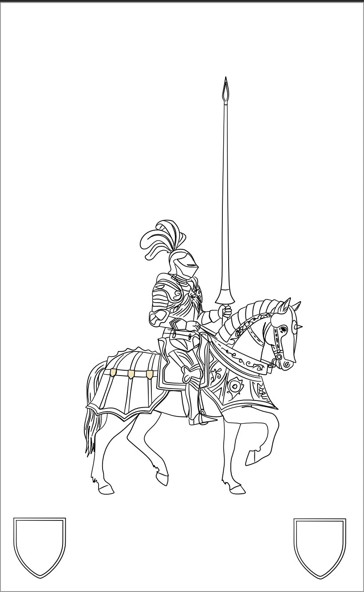
From a grey placeholder to a fully detailed vector illustration
The first single-knight sketch is intentionally rough. It just needed to confirm the layout worked: one rider, lance vertical, moving left to right, title above. Once that read correctly at a glance, the actual illustration began.
The knight and horse are the most complex element on the page and they took the longest. The barding on the horse, the engraving on the chestplate, the plumes on the close helmet and the individual strands of the mane are all separate vector paths, drawn to give the impression of engraved metalwork when printed at full size. The linework also had to hold up at small sizes, so lines were kept clean and not too fine.
Vector illustration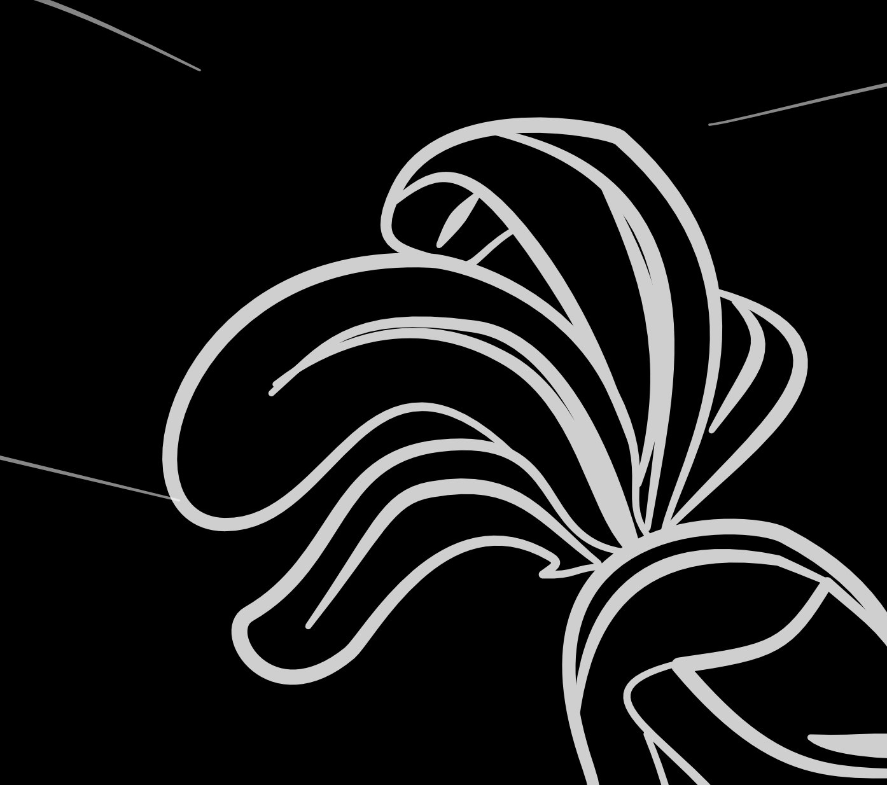
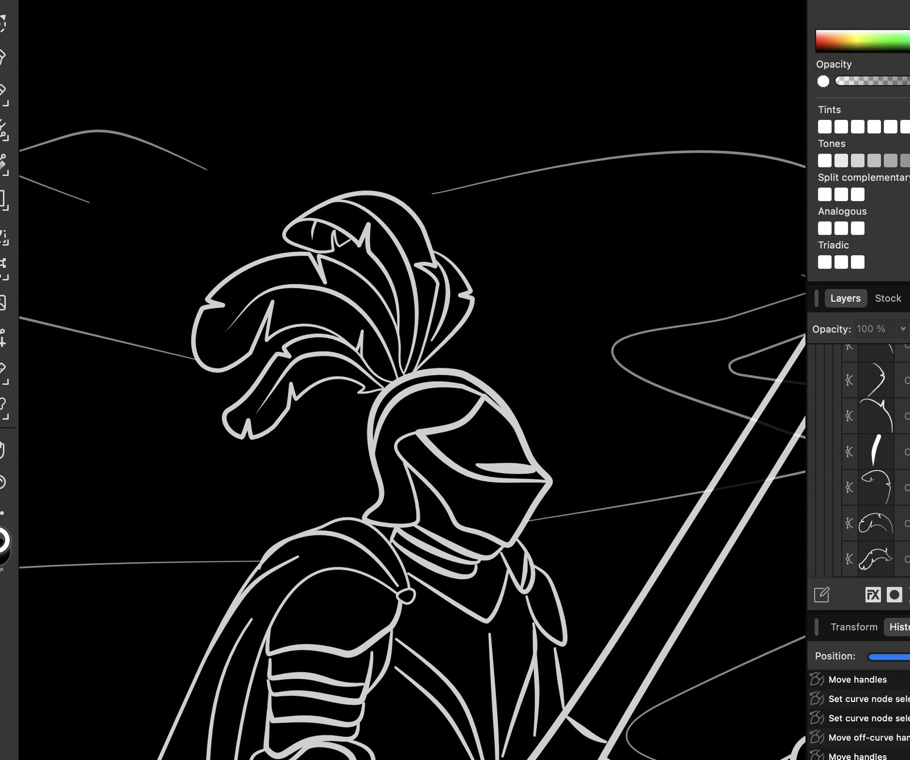
The plumes took longer than expected, and that was the right call
The helmet plume is the kind of detail that very few people will consciously notice, but everyone will feel. A flat or generic plume makes the knight look like a clipart image. A plume that has genuine movement and layering makes the whole figure feel like it was drawn by someone who knows what they are looking at.
The first version was a simple sweep of curved lines, just enough to suggest feathers. It was compared against period references and redone with individual feather strands curling at the tips, a tighter bundle at the base where they attach to the helmet crest, and proper overlap to give a sense of depth. It is a small area of the cover but it is right in the centre of the reader's eyeline.
Affinity Designer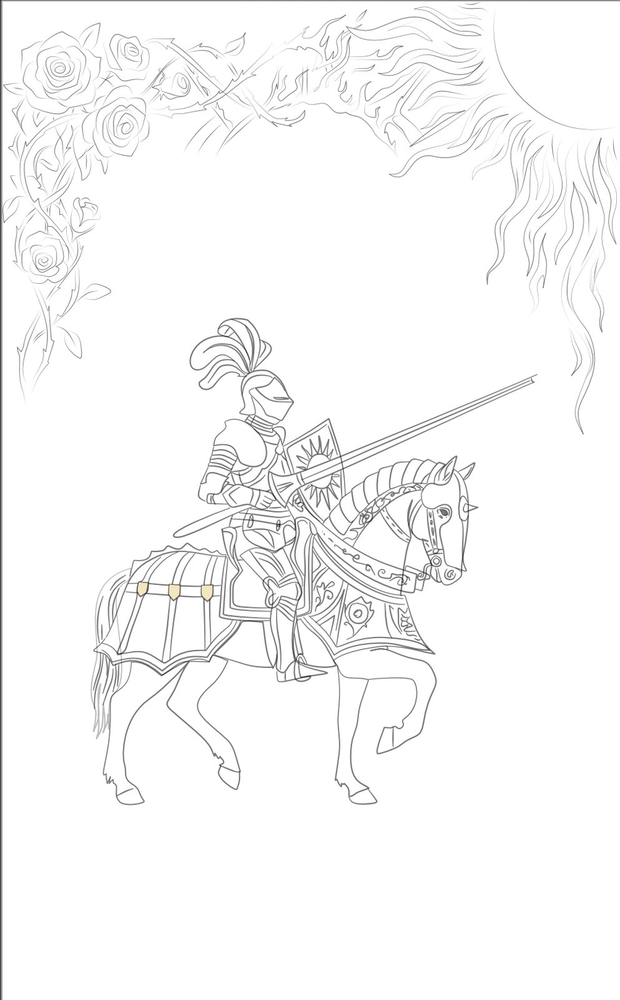
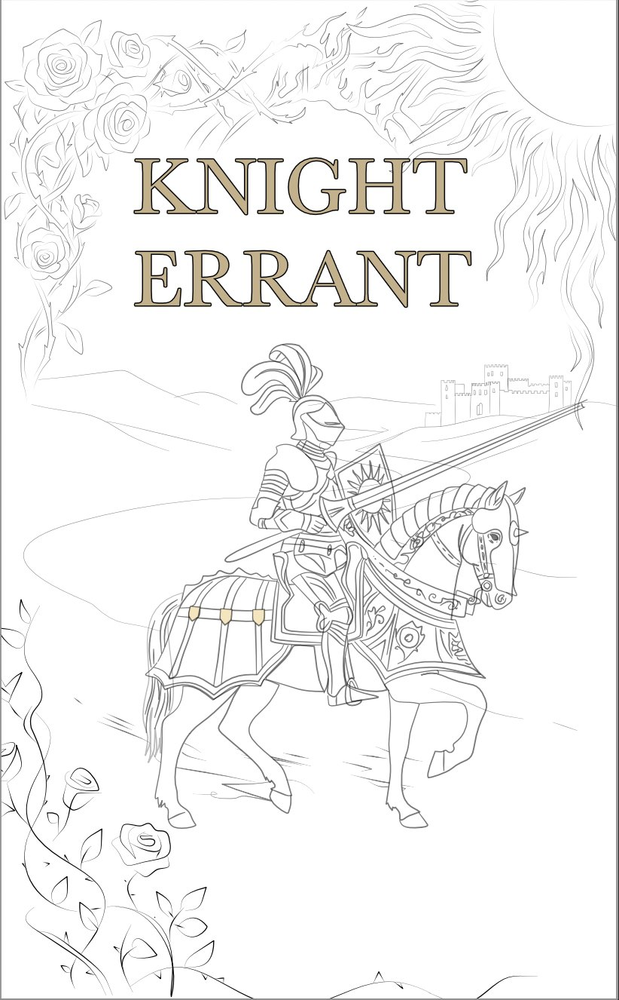
Testing the lance horizontal, then deciding it was wrong
One major question for the composition was the angle of the lance. A horizontal lance fills width, creates a strong visual barrier across the page and gives the cover a confrontational, battle-ready energy. The roses and flame borders were added at this stage too, framing left and right.
The background landscape also came in here: rolling dark hills, a winding road and a distant castle silhouette on the horizon. These elements are important because they tell you this is a solitary knight on a journey, not a battle scene, which is the correct tone for the title.
After sitting with it, the horizontal lance was dropped. It made the composition feel busy and cut across the title space in a way that competed with the typography rather than working with it.
Composition v3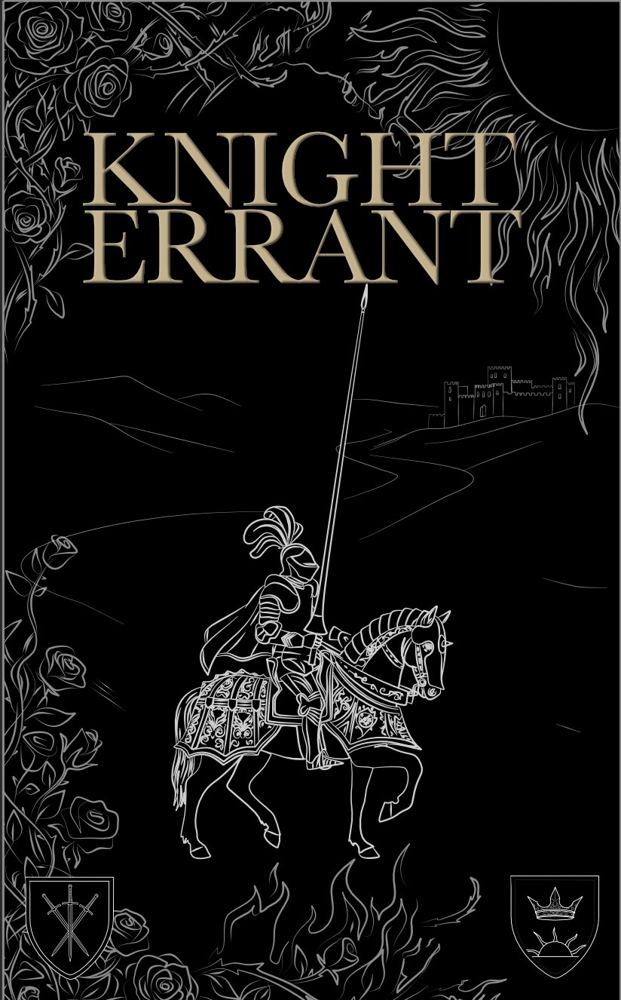
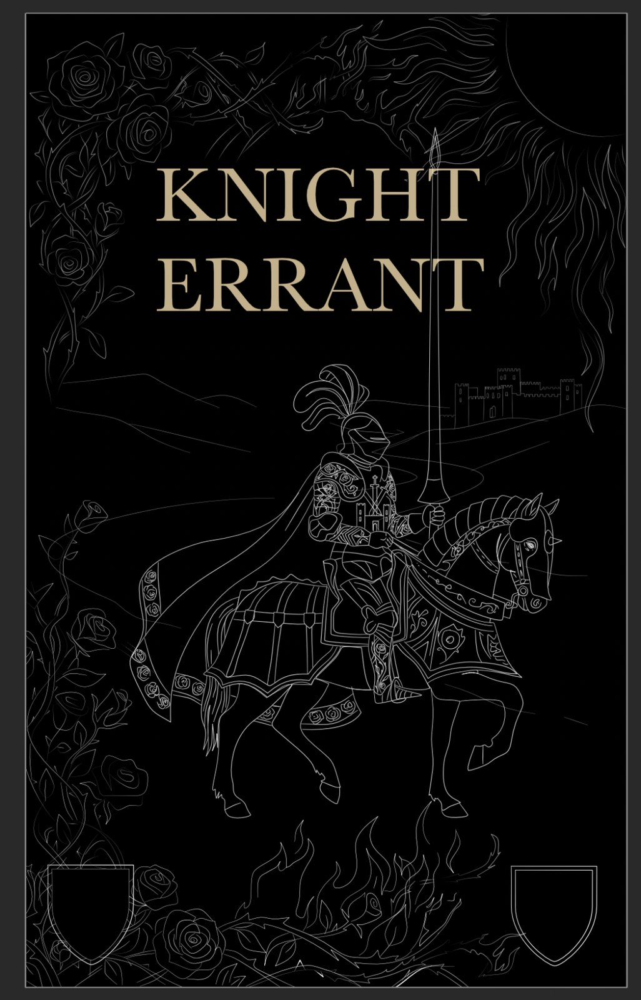
Moving the lance to vertical and adding the cape
The lance moving to a near-vertical angle solved several problems at once. It creates a strong diagonal line that pulls the eye from the bottom of the page up through the knight and into the title, which is exactly how you want a reader's gaze to move across a cover. It also freed up horizontal space around the rider, so the landscape could breathe.
The long flowing cape was added in this iteration. It adds silhouette interest to the knight, gives a sense of movement and wind, and fills the otherwise empty lower-left area of the composition without adding a new element. The two heraldic shields at the bottom corners were placed as a reference to the two warring houses in the story.
Composition v5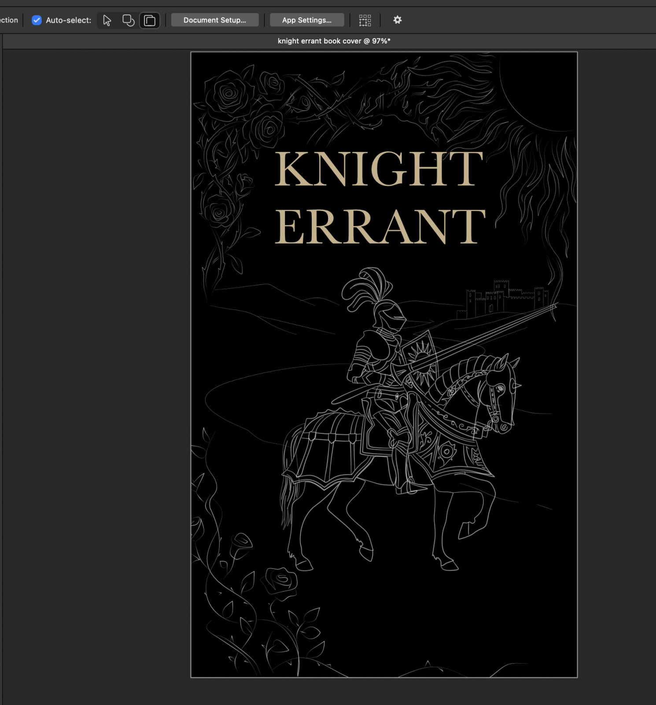
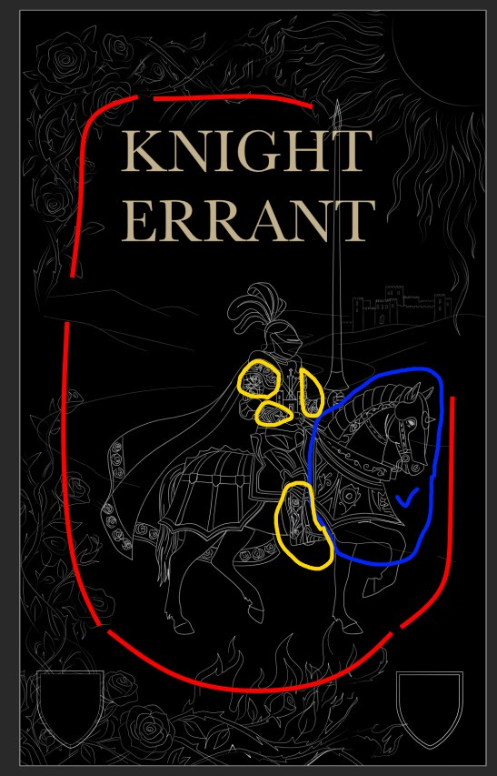
Adding the sun, getting the author's feedback, and marking everything that needed to change
A large sun motif was brought in to the upper right as a counterbalance to the rose cluster on the left. The two motifs represent the two factions in the novel and their placement left and right of the composition mirrors the conflict. More roses were added to the upper border and the shields were progressed with rough heraldic content.
The annotated version on the right shows the first round of author feedback. The red lines indicate where the border layout needed adjusting. The yellow circles mark specific armour details that were incorrect for the world: too much engraving on the wrong parts, a chestplate that did not match the character's description. The blue oval marks the horse, which the author was happy with. This feedback round is part of the process and is far more useful than a vague approval, because it gives precise targets for the next draft.
Feedback round 1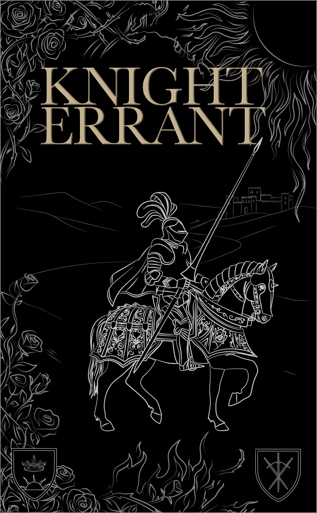
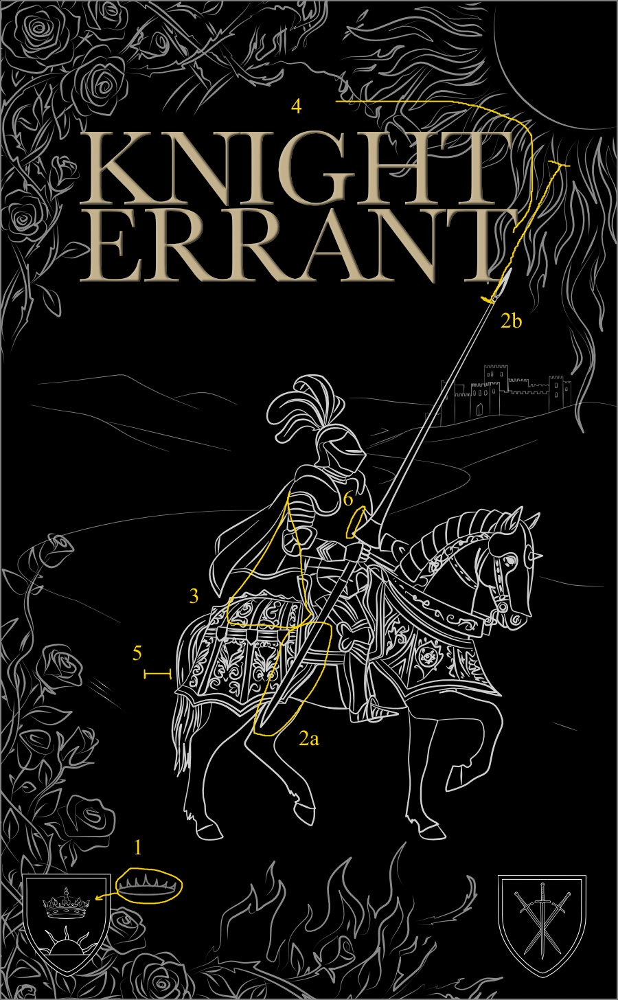
Responding to the first feedback and getting a second round of notes
The changes from round one were applied. The armour engraving was stripped back and redistributed correctly. The chestplate was redrawn flat. The shields were filled in with coloured fields and the heraldic charges drawn properly rather than as placeholders.
The second set of annotations came back with six numbered notes. These were more specific: the lance tip angle, a detail on the crown in one shield, the proportion of the chestplate, the placement of a shin guard. This level of specificity from an author is actually a good sign. It means they are looking at the cover in detail and caring about its accuracy, which is exactly what you want when the illustration is meant to feel true to their world rather than decorative.
Feedback round 2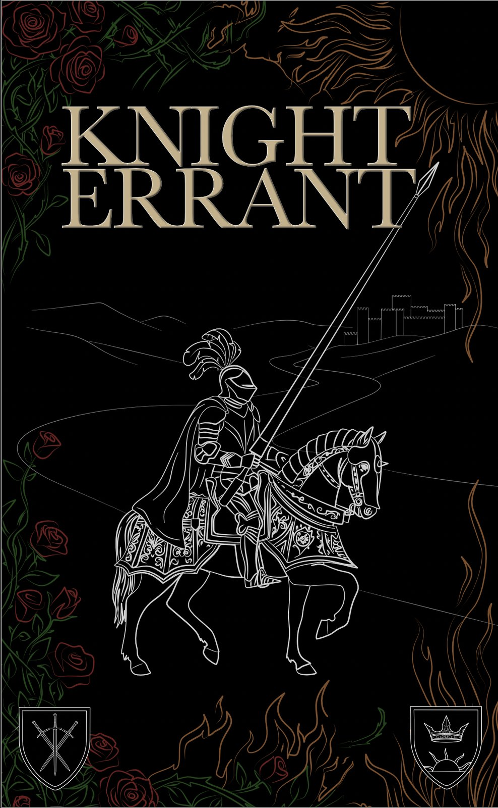
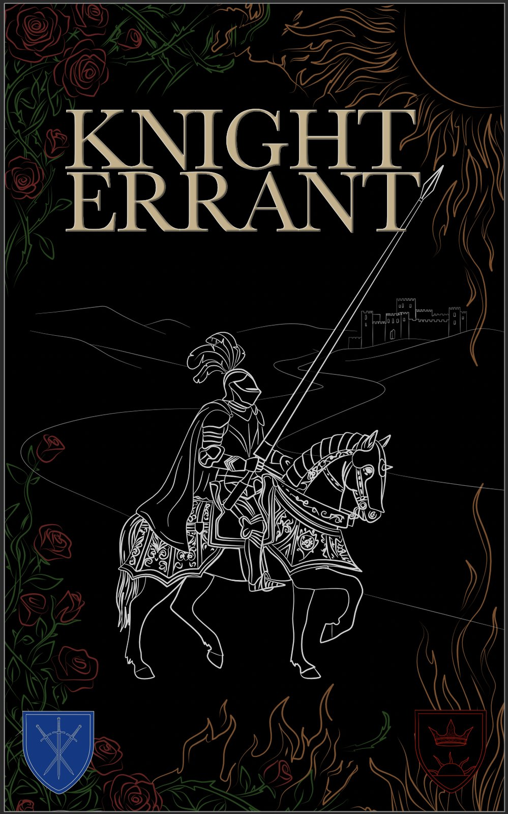
Building out the colour direction as a genuine option
Before locking in the monochrome direction, a fully coloured version was built. The roses are red with dark green foliage, the flames run amber and orange, the shields are coloured in their faction colours and the linework reads against the black background as white, which gives the knight itself a lit, almost engraved feel.
The colour version has a completely different personality to the monochrome. It is warmer, more immediately dramatic and hits harder as a physical object on a shelf. The monochrome feels more graphic and controlled. Neither is wrong for this cover, they are just two different tones for the same story, and the decision between them is still open. The final choice will be made closer to publishing time once the author has seen both as physical mockups side by side.
Colour v1 and v2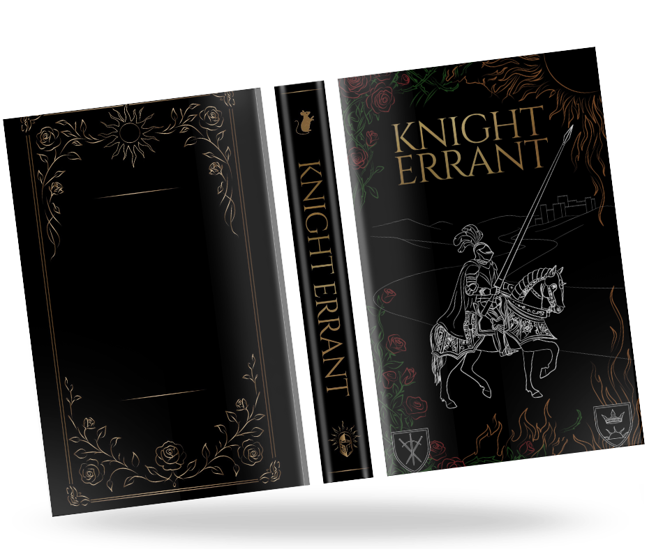
Seeing the colour edition as a complete physical book
The colour direction was taken all the way to a full jacket mockup so the author could see it as a real object rather than a flat screen export. The back cover gets a gold-line rose border with a sun motif centred in the upper half, which mirrors the faction imagery on the front without repeating the illustration. The spine runs with the title in gold on black and the publisher mark at the base.
As a complete jacket, the colour version holds together well. The back cover especially benefits from the gold treatment, it feels like a collectable hardback. Whether the final cover goes this route or stays monochrome, building out the full jacket at this stage was useful because it forced decisions about the back cover design that would need to be made eventually either way.
Colour jacket mockup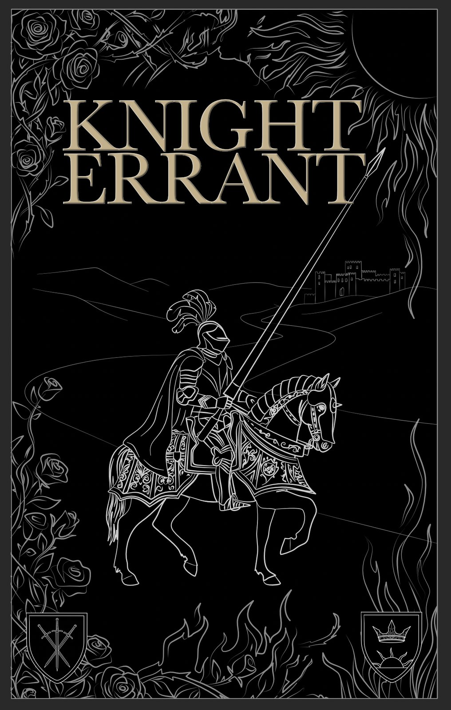
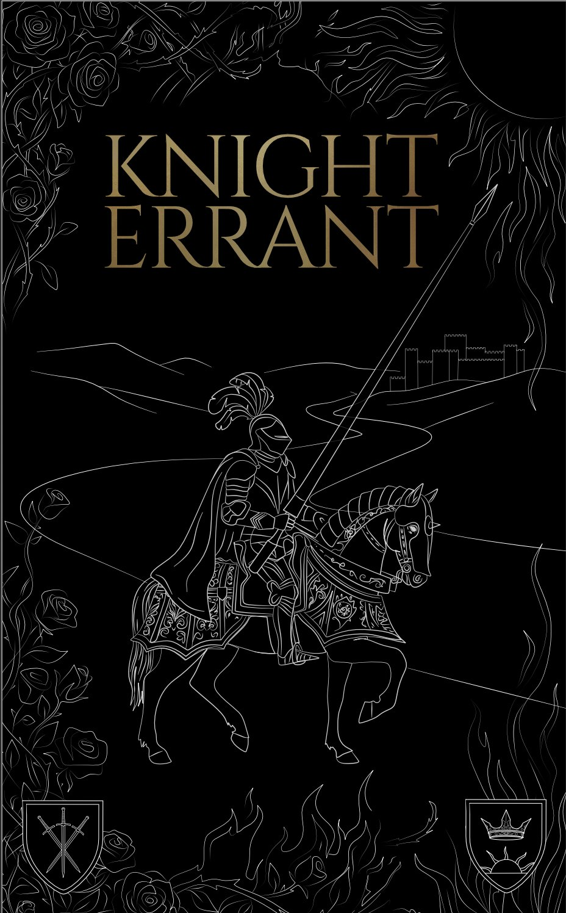
The monochrome version taken to a finished, print-ready state
Alongside the colour exploration, the monochrome version was taken to a fully finished state. The rose linework was made denser and more consistent in weight. The flame at the bottom was cleaned up so it reads clearly as fire. The shields were finalised with their correct heraldic charges drawn accurately to the story's descriptions.
The title sits in IM Fell English, a revival of typefaces originally cut for the Fell collection at Oxford in the late 1600s. It carries the feel of an old manuscript without looking like a costume font, and at this size it holds its own against the detailed illustration without competing with it. Both this version and the colour jacket are now finished and ready, and the decision between them will be made closer to the publishing date.
Monochrome version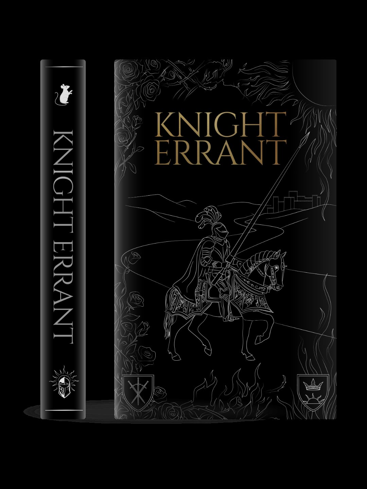
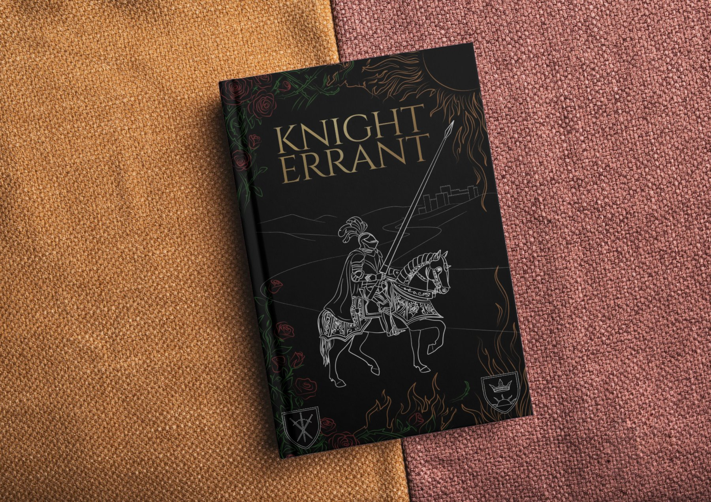
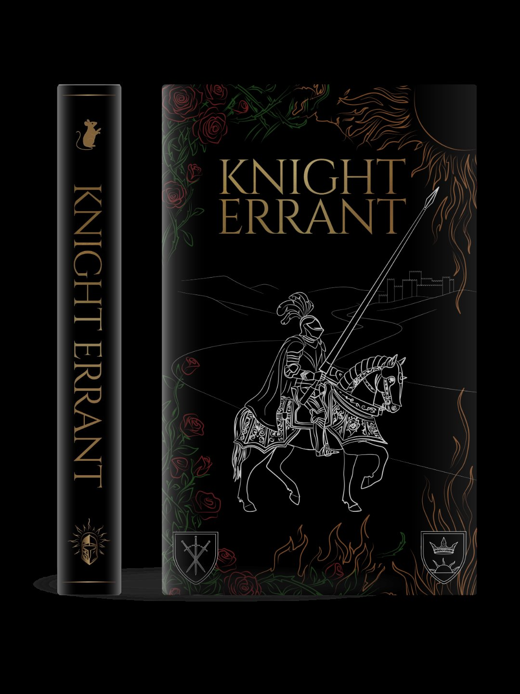
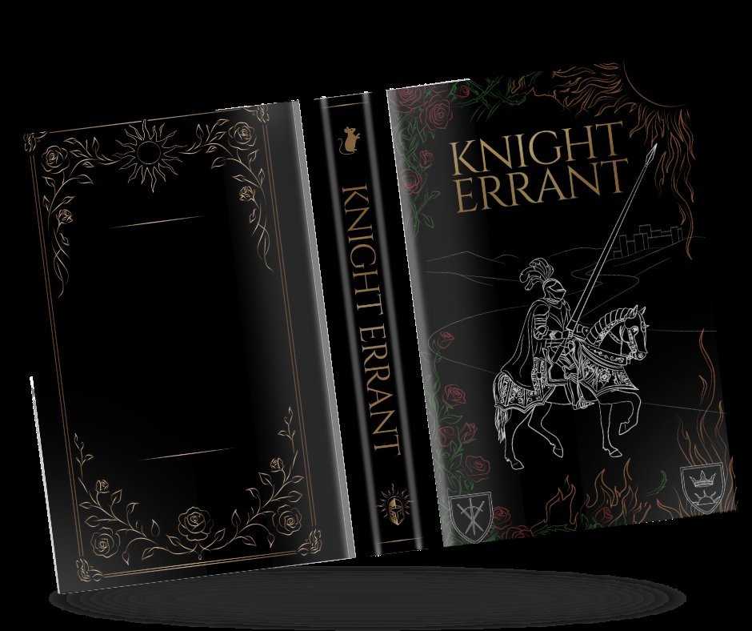